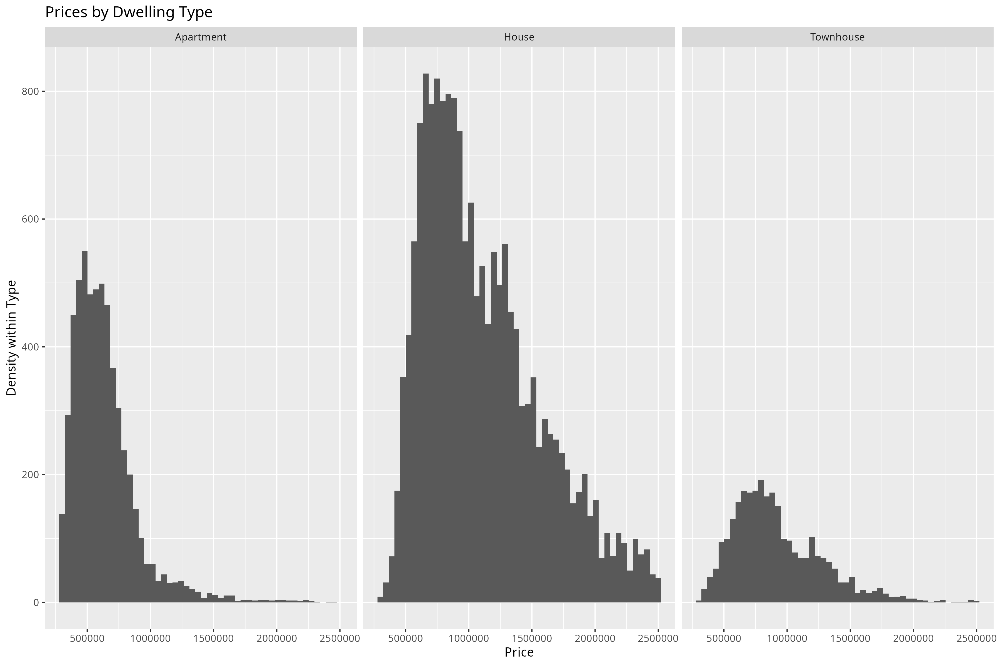
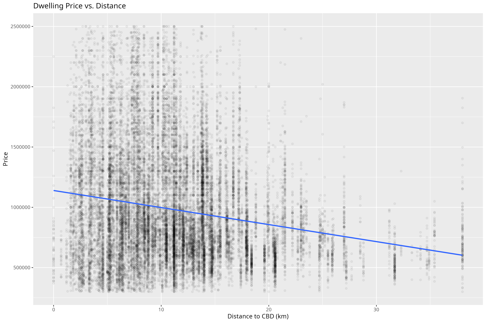

Tutorial 3: Data Visualization for Business Intelligence
The Topic: Briefing the Sales Team at Ferg and Deer Property Advisory
You are a junior analyst on the Market Intelligence team at Ferg and Deer Property Advisory, a real estate advisory firm operating across Melbourne. Melbourne’s real estate market is one of the most dynamic in Australia, and even small shifts in pricing expectations matter in a $2 trillion+ market. Ahead of next quarter’s sales push, the Head of Residential Sales has asked your team for a one-page visual briefing: something an agent can glance at before a client meeting, and something an investor can use to sanity-check their assumptions.
She has three specific questions, and wants one chart to answer each:
Where is market activity concentrated? Which regions have the most listings? This could inform where the sales team should direct their focus.
What do prices look like across property types? How do Houses, Townhouses, and Units compare, and what does that imply about who can afford what?
Does location explain the price differences? How does proximity to the CBD affect property prices?
Over this tutorial, you’ll build one chart to answer each question, polish each one so it’s ready to put in front of the Head of Residential Sales, and then assemble all three into the single one-page briefing she asked for.
The Data: The Melbourne Housing Market Dataset
We will use a dataset containing real estate sales data from Melbourne. The dataset provides insights into housing trends and includes key variables that influence property prices.
The dataset captures the property location within broader metropolitan regions (regionname), allowing us to compare trends across different areas. It also includes the type of dwelling, classified as House (h), Townhouse (t), or Apartment (u), enabling us to assess price differences based on housing type. The sale price (price) provides a measure of market value, while the distance to the CBD (distance) helps analyze the impact of proximity to the city center on property prices.
Similar datasets are widely used by real estate analysts, banks, and property investors to assess housing trends, predict future movements, and guide investment decisions. Through this tutorial, we’ll work with real-world data to uncover patterns and develop a deeper understanding of Melbourne’s property market. Let’s dive in!
Loading the Data
R packages for today
library(tidyverse) # for plotting, includes ggplot
── Attaching core tidyverse packages ──────────────────────── tidyverse 2.0.0 ──
✔ dplyr 1.1.4 ✔ readr 2.1.5
✔ forcats 1.0.0 ✔ stringr 1.5.1
✔ ggplot2 3.5.2 ✔ tibble 3.3.0
✔ lubridate 1.9.4 ✔ tidyr 1.3.1
✔ purrr 1.1.0
── Conflicts ────────────────────────────────────────── tidyverse_conflicts() ──
✖ dplyr::filter() masks stats::filter()
✖ dplyr::lag() masks stats::lag()
ℹ Use the conflicted package (<http://conflicted.r-lib.org/>) to force all conflicts to become errors
library(patchwork) # for combining multiple plots into subfigureslibrary(scales) # for formatting axis scales
Attaching package: 'scales'
The following object is masked from 'package:purrr':
discard
The following object is masked from 'package:readr':
col_factor
library(ggokabeito) # color blind friendly color palette -- this course's default
Loading the Data in R
housing <-read_csv("data/melbourne_housing.csv")
Prepare these Exercises before Class
Prepare these exercises before coming to class. Plan to spend 45 minutes on these exercises.
ImportantSwitch the eval flag to TRUE when you want to evaluate code!
In the R code chunks below we have provided starter code for you to work from. We have set the key eval to the value false so that they are not run because they have syntax such as YOUR_VALUE_HERE which would generate errors.
Switch the eval value to TRUE when you want the R code within a chunk to be run when you compile your document.
Exercise 1: Understanding ggplot2 Syntax
This first panel will answer the Head of Residential Sales’s question of where market activity is concentrated. Before you build it, let’s make sure you’re comfortable with the ggplot2 syntax you’ll be using throughout this tutorial.
Consider the code below:
ggplot(housing, aes(x = regionname) ) +geom_bar() +labs(x ="Region",y ="Count",title ="Number of Listings by Region" )
(a) What does ggplot(housing, aes(x = regionname)) do?
(b) What is the role of aes(x = regionname) in this code?
(c) What does geom_bar() add to the plot?
(d) What does labs() do?
(e) In this code, what does the + operator do?
(f) Run the code above to produce the bar plot.
Exercise 2: Visualizing the distribution of Prices by Dwelling Type
This is the second panel for the briefing: it answers the Head of Residential Sales’s question of what prices look like across property types.
By the end of this exercise, your plot should look similar to this one:

(a) Why is a histogram useful for understanding price distributions? What insights can we gain from plotting price distributions separately for each dwelling type?
TipWhat is a Histogram?
A histogram is a visualization that represents the distribution of numerical data by dividing values into bins and counting the number of observations in each bin. Unlike a bar plot, which displays categorical data, a histogram is used for continuous variables like price, age, or distance.
Histograms help identify patterns in data, such as skewness, outliers, and central tendencies, making them a crucial tool for understanding how values are distributed in a dataset.
(b) Use the starter code below to create a basic histogram of house prices. Replace YOUR_VARIABLE_NAME with the correct variable.
(c) Extend the plot above by adding labels to the x-axis, y-axis, and title using the labs() function.
ggplot(housing, aes(x = YOUR_VARIABLE_NAME) ) +geom_histogram(bins =50) +labs(x ="YOUR_X_AXIS_LABEL", y ="YOUR_Y_AXIS_LABEL", title ="YOUR_TITLE" )
(d) Modify the plot so that you create separate histograms for each dwelling type by adding the facet_wrap(~type) layer to the plot
ggplot(housing, aes(x = price) ) +geom_histogram(bins =50) +labs(x ="YOUR_X_AXIS_LABEL", y ="YOUR_Y_AXIS_LABEL", title ="YOUR_TITLE" ) YOUR_CODE_HERE
(e) What does the histogram tell you about price differences between dwelling types?
Exercise 3: The Price - Distance Relationship
This is the third and final panel: it tackles the Head of Residential Sales’s last question, whether distance from the CBD explains the price differences you’re seeing.
By the end of this exercise, your plot should look similar to this one:

(a) Why might we expect a relationship between price and distance to the CBD?
(b) Use the starter code below to build a scatter plot of price vs. distance, replacing YOUR_VARIABLE_NAME with the correct column names.
TipWhat is a Scatter Plot?
A scatter plot is used to visualize the relationship between two continuous variables by plotting individual data points. Each dot represents one observation, helping identify patterns, clusters, and trends. In this case, it allows us to explore how house prices change with distance.
ggplot(housing, aes(x = YOUR_VARIABLE_NAME, y = YOUR_VARIABLE_NAME) ) +geom_point()
(c) Since we have a large number of data points, many overlap, making it difficult to distinguish individual observations. Modify the geom_point() function to reduce over-plotting by adjusting the alpha value. Experiment with different values (e.g., 0.1, 0.05, 0.01) and describe how each affects the visualization.
(d) We can better understand the relationship by adding a statistical transformation to the plot. Add a fitted line using geom_smooth(method = "lm", se = FALSE).
(e) Finally, add labels to the x-axis, y-axis, and title using the labs() function. Adjust the x- and y-axis scales as you deem appropriate.
ggplot(housing, aes(x = YOUR_VARIABLE_NAME, y = YOUR_VARIABLE_NAME) ) +geom_point(alpha = YOUR_NUMBER) + YOUR_CODE_HERE +labs(x ="YOUR_LABEL", y ="YOUR_LABEL", title ="YOUR_TITLE" )
(f) What does the scatter plot reveal about the relationship between house prices and distance to the CBD? How does the line help interpret this relationship?
In-Class Exercises
You will discuss these exercises in class with your peers in small groups and with your tutor. These exercises build from the exercises you have prepared above, you will get the most value from the class if you have completed those above before coming to class.
Exercise 4: Improving the Price Distribution Plot
(a). Together with your peers, propose three changes you want to make to the plot in Exercise 2. Discuss the rationale behind each change and how it might improve the visualization.
(b). Work with your tutor to create an agreed upon list of changes to make to the plot. What steps do you need to take to make these improvements?
(c). Implement the changes suggested in the R code.
# Write your answer here
(d) What’s the key takeaway from this panel? In a sentence or two, what does it tell the Head of Residential Sales about pricing across dwelling types?
Exercise 5: Improving the Price-Distance Relationship Plot
(a). Together with your peers, propose two changes you want to make to the plot in Exercise 3. Discuss the rationale behind each change and how it might improve the visualization.
(b). Work with your tutor to create an agreed upon list of changes to make to the plot. What steps do you need to take to make these improvements?
(c). Implement the changes suggested in the R.
# Write your answer here
(d) What’s the key takeaway from this panel? In a sentence or two, what does it tell the Head of Residential Sales about the relationship between price and distance to the CBD?
Exercise 6 [Optional, if time]: Improving the Listings by Region Plot
(a). Together with your peers, propose two changes you want to make to the plot in Exercise 1. Discuss the rationale behind each change and how it might improve the visualization.
(b). Work with your tutor to create an agreed upon list of changes to make to the plot. What steps do you need to take to make these improvements?
(c). Implement the changes suggested in the R.
# Write your answer here
(d) What’s the key takeaway from this panel? In a sentence or two, what does it tell the Head of Residential Sales about where listing activity is concentrated?
Exercise 7: Putting the plots together
(a). Use the code below to combine the plots from the exercises above. Replace PLOT_ONE, PLOT_TWO, and PLOT_THREE with the plots you created in Exercises 4, 5, and 6.
(b). Save this combined plot as a PDF file using the ggsave() function. You can specify the file name and dimensions using the filename and width and height arguments.
ggsave("YOUR_FILE_NAME", width =12, height =8)
Exercise 8: A hallway conversation with the Head of
You only have ten seconds with the Head of Residential Sales before she moves to her next meeting. You can show her exactly one of your three panels.
Which panel do you choose, and in one sentence, what do you say about it? Be ready to defend your choice.